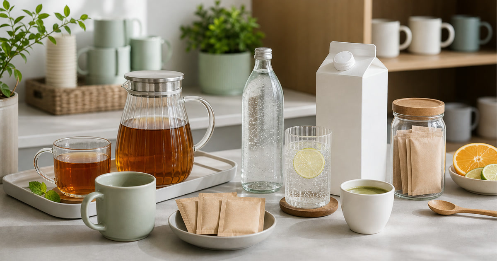

下午三點喝什麼：無糖茶、花草茶、氣泡飲與沖泡飲怎麼放辦公室
辦公室飲品應以保存方式、糖度與共享便利性決定，無糖茶、氣泡飲與沖泡飲不要全部混在一起補。

下午三點喝什麼，表面上是口味選擇，實際上是保存、共享和節奏管理。無糖茶、花草茶、氣泡飲、植物奶或沖泡飲都有不同保存方式與使用門檻；如果只照喜好補貨，茶水間很快會變成過期、重複和沒人想開封的集合。
先分日常飲、共享飲與備用飲
每天會喝的飲品要穩定、保存簡單；共享飲要容易開封、份量清楚；備用飲則適合放在加班或臨時來客時使用。三者混在一起，就會很難判斷何時補貨。
Teavoya、ACE TEA 與 KKM 可放在茶、冷泡或辦公室飲品補給中比較；食品與飲品資訊請以商品頁和包裝標示為準。
Elite Fashion 編輯團隊的具體判斷是：把飲品分成日常、共享、送禮與加班四種情境。 這讓 Teavoya - 嘉柏茶業、ACE TEA蒔宇茶 與其他選項能被放回同一個生活問題裡比較，而不是只看單一商品照片。
下單前仍要回商品頁確認規格、尺寸、材質、活動、庫存與配送；若資訊不足，先暫緩，比把不確定的物品帶回家更成熟。
- 先確認使用位置與拿取頻率。
- 再看保存、清潔、線材或收納條件。
- 最後才比較品牌、活動與預算。
糖度和咖啡因比包裝更重要
辦公室飲品若要共享，糖度、咖啡因、沖泡方式和保存期限都比包裝風格更實際。有人需要無糖，有人想要氣泡，有人只需要熱水可沖。
PV女性微甜草本飲、恩亞生活與 Zymoide 這類飲品店家可作為不同風味與補給參考；不得宣稱保健、代謝或療效。
Elite Fashion 編輯團隊的具體判斷是：把飲品分成日常、共享、送禮與加班四種情境。 這讓 Teavoya - 嘉柏茶業、ACE TEA蒔宇茶 與其他選項能被放回同一個生活問題裡比較，而不是只看單一商品照片。
下單前仍要回商品頁確認規格、尺寸、材質、活動、庫存與配送；若資訊不足，先暫緩，比把不確定的物品帶回家更成熟。
- 先確認使用位置與拿取頻率。
- 再看保存、清潔、線材或收納條件。
- 最後才比較品牌、活動與預算。
Elite 嚴選
茶包、瓶裝與紙盒飲的收納要分開
茶包怕濕，瓶裝怕重，紙盒飲要看開封後保存。若全部放在同一層，最容易發生的是快到期的看不見、已開封的被忘記。
建議把飲品分成未開封、已開封、共享、個人四格，補貨時會清楚很多。
Elite Fashion 編輯團隊的具體判斷是：把飲品分成日常、共享、送禮與加班四種情境。 這讓 Teavoya - 嘉柏茶業、ACE TEA蒔宇茶 與其他選項能被放回同一個生活問題裡比較，而不是只看單一商品照片。
下單前仍要回商品頁確認規格、尺寸、材質、活動、庫存與配送；若資訊不足，先暫緩，比把不確定的物品帶回家更成熟。
- 先確認使用位置與拿取頻率。
- 再看保存、清潔、線材或收納條件。
- 最後才比較品牌、活動與預算。
送禮飲品要看對方是否會沖泡
茶禮盒、植物奶或沖泡飲都可能很體面，但如果對方沒有沖泡習慣或保存空間，再漂亮也會增加負擔。送禮時應優先看份量、保存期限和使用門檻。
若是辦公室共享，單份包裝通常比大包裝更容易被使用完。
Elite Fashion 編輯團隊的具體判斷是：把飲品分成日常、共享、送禮與加班四種情境。 這讓 Teavoya - 嘉柏茶業、ACE TEA蒔宇茶 與其他選項能被放回同一個生活問題裡比較，而不是只看單一商品照片。
下單前仍要回商品頁確認規格、尺寸、材質、活動、庫存與配送；若資訊不足，先暫緩，比把不確定的物品帶回家更成熟。
- 先確認使用位置與拿取頻率。
- 再看保存、清潔、線材或收納條件。
- 最後才比較品牌、活動與預算。
常見錯誤：把健康想像寫進飲品
飲品可以是下午的停頓，但不應被寫成健康捷徑。無糖、草本、酵素、植物奶等字眼，都需要回到商品標示和個人飲食需求。
本文只提供辦公室補給與收納順序，不構成營養、健康或個人化飲食建議。
Elite Fashion 編輯團隊的具體判斷是：把飲品分成日常、共享、送禮與加班四種情境。 這讓 Teavoya - 嘉柏茶業、ACE TEA蒔宇茶 與其他選項能被放回同一個生活問題裡比較，而不是只看單一商品照片。
下單前仍要回商品頁確認規格、尺寸、材質、活動、庫存與配送；若資訊不足，先暫緩，比把不確定的物品帶回家更成熟。
- 先確認使用位置與拿取頻率。
- 再看保存、清潔、線材或收納條件。
- 最後才比較品牌、活動與預算。
補貨前的三個問題
誰會喝、多久喝完、開封後放哪裡。這三個答案比一次買齊更多口味更重要。
價格、活動、庫存、成分、保存方式與配送請以下單前商品頁公告為準。
Elite Fashion 編輯團隊的具體判斷是：把飲品分成日常、共享、送禮與加班四種情境。 這讓 Teavoya - 嘉柏茶業、ACE TEA蒔宇茶 與其他選項能被放回同一個生活問題裡比較，而不是只看單一商品照片。
下單前仍要回商品頁確認規格、尺寸、材質、活動、庫存與配送；若資訊不足，先暫緩，比把不確定的物品帶回家更成熟。
- 先確認使用位置與拿取頻率。
- 再看保存、清潔、線材或收納條件。
- 最後才比較品牌、活動與預算。
同主題品牌參考
Teavoya - 嘉柏茶業
茶禮盒推薦、冷泡茶怎麼選、上班族茶包清單
瀏覽品牌ACE TEA蒔宇茶
冷泡茶推薦、辦公室茶包、茶禮盒怎麼選
瀏覽品牌KKM 健康飲食 專賣-植物奶|果汁|穀物果乾
植物奶怎麼選、早餐健康補給、辦公室零食與果乾清單
瀏覽品牌PV女性微甜草本飲｜Pistina Vioya
女性辦公室飲品、低負擔微甜氣泡、節日送禮飲料
瀏覽品牌恩亞生活 enyalife
早餐營養粉、控糖烘焙材料、運動族蛋白補給、DIY保養原料
瀏覽品牌Zymoïde 天然酵素飲專賣
酵素飲怎麼選、外食族補給、每日飲品替換清單
瀏覽品牌FAQ
辦公室飲品應該買無糖嗎？
若是共享，無糖通常較有彈性，但仍要看同事需求、咖啡因和保存方式。
草本飲或酵素飲可以寫保健效果嗎？
不可以。本文不宣稱保健、代謝、療效或改善效果，請以商品標示為準。
下午飲品怎麼避免買太多？
先分日常、共享、備用三類，設定兩週到一個月的補貨量，再看保存期限。
下一步建議
辦公室飲品應以保存方式、糖度與共享便利性決定。 先用本文順序縮小範圍，再回商品頁確認規格、價格、活動與庫存。
重要警語
本文含品牌／商品導購連結；商品資訊、價格、規格、活動與庫存請以商品頁公告為準。草本與酵素飲不得宣稱保健、代謝或療效。
本文含品牌／商品導購連結；若你透過部分商品連結前往選購，Elite Fashion 可能取得合作收益。本文仍以編輯判斷與使用情境整理為主，價格、規格、活動與庫存請以商品頁公告為準。